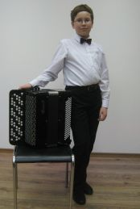
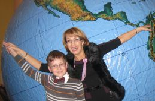
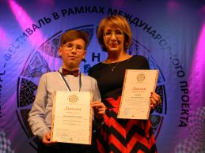
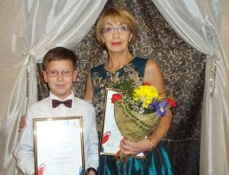
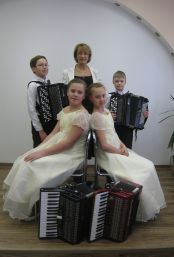
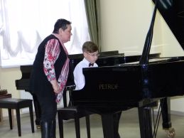

Приветствую тебя, дорогой посетитель! Добро пожаловать на мой персональный сайт!
Меня зовут Матвей, на день написания этого сайта мне 13 лет, пока я школьник, а если точнее то лицеист. Я учусь в 9 А классе с физико-математическим профилем в Школе Интернате Лицее Интернате города Калининграда, или просто в ШИЛИ. Учиться в лицее не очень легко, временами, даже сложно, особенно в периоды экзаменов, но мне нравится учиться здесь, потому что люблю всё новое, а значит интересное и когда жизнь «кипит». Вот и сейчас в лицее лицеисты готовятся к лицейской научно-практической конференции «Золотые россыпи», готовятся представлять свои научно-исследовательские проекты, на темы, выбранные в начале учебного года. Я тоже буду представлять свой проект в секции информатики на тему «Создание своего сайта».
Да, если вы ещё не догадались, данный сайт это конечный продукт моей проектной научно-исследовательской работы. Создать свой персональный сайт я мечтал давно, лет в десять, когда только начал осваивать HTML, тогда у меня уже появились свои первые веб-странички, но не в сети, а только у себя на компьютере. С тех пор я много раз представлял себе свой сайт, каким он будет, но не было повода воплотить эти представления в реальность. И вот, когда пришло время выбирать темы своих проектов, я без всяких долгих размышлений выбрал тему «Создание своего сайта» и сейчас исполнил свою, можно сказать, мечту. Я немного волнуюсь и очень надеюсь, что мой проект понравится участникам научно-практической конференции и его оценят по достоинству, а пока держу пальцы крестиком.
А теперь я расскажу ещё немного о себе и своих увлечениях, как и подобает, делать на персональных сайтах.
И так, кроме того, что я учусь в лицее, ещё я учусь в пятом классе по семилетней программе дополнительного образования, самой лучшей Детской Школе Искусств Калининградской области, которая находится в городе Пионерский, где работают, и даже иногда некоторые живут, самые лучшие педагоги в сфере культуры и искусства в России. Это самый отзывчивый, добрый и любимый директор ДШИ Людмила Леонидовна, и самый строгий, но справедливый учитель «Музыкальной литературы» и заместитель директора «по всем вопросам» Ирина Леонидовна, и мой учитель по Сольфеджио Татьяна Михайловна и ещё много прекрасных и добрых людей.
Самые лучшие педагоги России – это не метафора, моя учительница по моему основному музыкальному инструменту «баян» и по такому приятному совместительству, мой близкий друг Рейдман Яна Григорьевна, в этом году высоко отмечена министром культуры Российской Федерации Владимиром Мединским. Яна Григорьевна стала победителем Смотра юных дарований Общероссийского конкурса «Лучший преподаватель детской школы искусств», я очень горжусь этим и чувствую всю ответственность и значимость для себя. Ну, и как вы догадались, «юное дарование» - это … я. Да, меня тоже отметили дипломом победителя этого престижного Общероссийского конкурса, и это моя первая, надеюсь, не последняя, федеральная награда из Москвы. И всё благодаря Яне Григорьевне, которая очень много терпения, сил и времени тратит на нашу с ней работу в музыке.
В музыке у меня не всегда всё получается гладко и хорошо с первого раза, но как говорится «терпенье и труд» всё перетирают. В музыкальную школу я пошёл поздно, только в девять лет, после того как послушал песню «Ленточка» известного и талантливого музыканта и исполнителя Игоря Рстеряева, после этой песни я влюбился в гармонь и решил пойти учиться играть на этом инструменте. Но, когда я пришёл в музыкальную школу, мне сказали, что гармони пока у нас нет, а есть намного лучший инструмент, и я с удовольствием согласился. Сегодня я играю на готово-выборном баяне, правильнее было бы сказать, что учусь играть на баяне, это очень красивый и серьёзный инструмент, кто слышал игру на готово-выборном баяне, со мной согласится. Кроме того, что этот инструмент очень красивый и мелодичный, можно ещё сказать, что изобрел его в сентябре 1907 года петербургский мастер Пётр Егорович Стерлигов. После более чем двухлетней работы он изготовил баян для выдающегося гармониста Я. Ф. Орланского-Титаренко, который дал этому инструменту название в честь древнерусского певца-сказителя Бояна.
Произведения в моём репертуаре в основном классические, широко известные и не очень, на баяне они звучат по особенному, чем на других музыкальных инструментах. Вы наверное все слышали смешное выражение про «части Марлезонского балета», так вот года два назад я неоднократно выступал на конкурсах и других площадках исполняя вполне серьёзное произведение сюиту "Марлезонский балет" В. Беляева из пяти частей: 1 - Пастухи и пастушки, 2 - Королевская охота, 3 - Порхающие птицы, 4 - Милостивый король, 5 - Возвращение королевской охоты. На моём сайте в разделе «Видео» вы можете прослушать эту сюиту в моём исполнении.
Кроме сольного исполнения я играю в нашем маленьком ансамбле «Симка», в котором кроме меня на баяне, играют на аккордеонах две сестры Настя и Саша, баянист Артём, и конечно же наша Яна Григорьевна. Наш ансамбль маленький, но нам всем интересно в нём, мы все дружим, участвуем в конкурсах, выступаем на фестивалях и даже иногда занимаем призовые места.
Ещё я играю на баяне в нашем оркестре народных инструментов «Аты-Баты» при ДШИ Пионерского городского округа, который носит почётное звание «Образцовый». Мы исполняем различные по жанрам произведения, но больше всего нам нравится выступать совместно с нашим детским хором, когда хор и оркестр выступают вместе, это просто ничем не выразить, а нужно видеть и слышать, я выложил одну запись такого выступления в разделе «Видео», прошу вас прослушать, вам обязательно понравится.
Помимо баяна, я учусь игре на фортепиано у моего преподавателя по общему фортепиано Пузаковой Ларисы Ивановны, преподавателя с большим стажем, которая уже много лет с большой любовью и чутким вниманием относится к своей работе и к своим ученикам. Лариса Ивановна вкладывает в своих учеников очень много сил и как следствие они показывают высокие результаты на конкурсах.
Из моих других интересов, я бы отметил математику, физику и информатику, да, это действительно интересно! Посмотрите, например, на этот сайт, я его написал сам, без каких либо программ и посторонней помощи, просто взял учебник по HTML для начинающих Алёновой Натальи, который мне, когда то давно, ненавязчиво подсунул мой папа, при помощи стандартного Блокнота в Microsoft Windows я написал своими «ручками» код этого сайта. Добавлю, что работать над ним мне было очень интересно и приятно, а ещё приятнее осознать, что мечты сбываются и каждый человек сам в состоянии их исполнять.
Ну вот, это наверное пока всё, что бы я хотел рассказать о себе и немного о тех прекрасных людях, которые меня окружают. Если они, когда-нибудь заглянут на этот сайт, я хотел бы им сказать, что Я ВСЕГДА БУДУ С ТЕПЛОМ ПОМНИТЬ О ВАС, но самое интересное, конечно, у нас впереди!
Матвей, автор сайта.